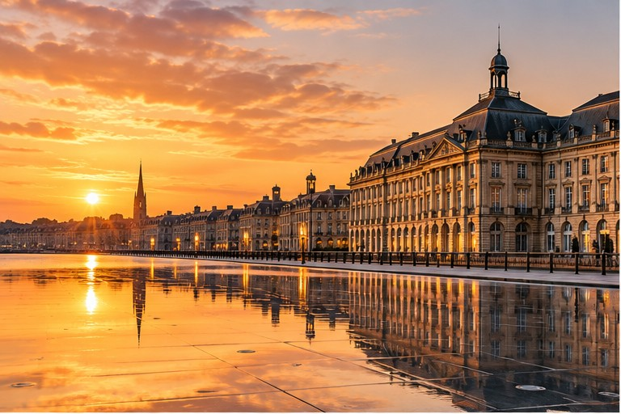
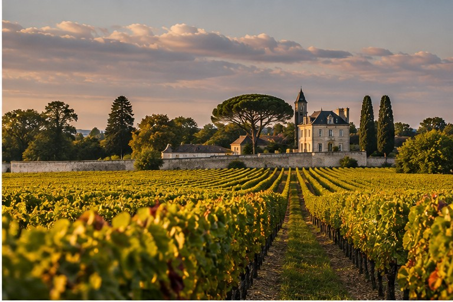

Alta cucina per chiudere la giornata nel Médoc
Centro storico, monumenti e atmosfera
Esperienza immersiva sul vino
La base del viaggio · 2 rue de Condé
Arcada · Le Pressoir d’Argent · Lume
Lynch-Bages · Cos d’Estournel · Margaux · Lamarque · Labarde
Pauillac · Grand Cru Classé
Salva qui preferiti e bottiglie da acquistare